| Nightshade | The graphic table |
An object record's first byte is its graphic, one of 158, and it decides everything else about the thing: the sprite it is drawn with, through GRAPHICS (TURN_SPRITE), and the update routine the main loop runs for it every turn, through UPDATES and the dispatcher (DISPATCH, which jumps by way of NMIADD, one of the tape's protections). There is no frame number: a thing animates, turns or becomes something else by changing its graphic, and the graphics come in runs of four -- four frames, or two pictures of two frames -- that share a routine. Many graphics share a sprite: the four objects are the same thrown or lying, the finds the same as the antibodies, and one set of puffs serves three purposes.
What is not in the graphic is in the record. Where a sprite is drawn is the record's place projected (PROJECT_THING) plus its drawing offset (+C, +D), which puts the sprite's bottom left corner there; how big the thing is, for touching and for walls, is its half-sizes (+8, +9). The game sets both when it makes a record, by the kind of thing, and a record keeps them as its graphic changes. Read from where each is set:
| Record | Graphics | Half-size U, V | Drawing offset x, y | Set by |
|---|---|---|---|---|
| knight's legs | 16-21, 24-29 | 16, 16 | -12, +2 | START_RECORDS |
| knight's top | 22, 30, 32-47 | 16, 16 | -12, +13 | START_RECORDS; the second of the two |
| object lying | 4-7 | 8, 8 | -12, +4 | OBJECT_RECORD |
| thrown object or antibody | 8-11, 80-95 | 16, 16 | -8, +4 | KNIGHT_THROWS |
| villain | 96-111 | 16, 16 | -12, +4 | VILLAIN_RECORD |
| monster | 128-131, then 64-79 or 112-127 | 16, 16 | -12, +4 | MONSTER_RECORD; graphic 76 is given a half-size of 24 in V as it appears (APPEARING_UPDATE) |
| find | 48-63 | 8, 8 | -8, +4 | SPAWN_FIND |
| bonus | 2, 3 | 16, 16 | -12, +4 | PLACE_BONUS |
| creature | 136-139 | 16, 16 | -12, +4 | SPAWN_CREATURE; put in a monster record, which keeps what it had where these are not written: the fallback, all six records near the knight, changes only the graphic |
| sparkle | 140-143 | 16, 16 | -12, +4 | VILLAIN_SPARKLES |
A half-size of 16 is a thing 32 units across, an eighth of a cell; the offset of -12 centres a sprite three bytes wide on its place, -8 one two bytes wide. So a thrown object, three bytes wide with the antibodies' -8, is drawn four pixels right of where it lay (read from the code; not looked for in play). The ending's records have none: they are drawn where ENDING_RECORDS puts them, with no projection.
Mirroring is bit 6 of the flags (+7), and the routines that set it are given with each group below. Bit 7 would turn a sprite upside down and nothing sets it.
Nothing -- The knight's legs -- The knight's top -- The four objects -- Finds, antibodies and sparkles -- The four villains -- The monsters of 112-127 -- The monsters of 64-79 -- The creature -- Puffs -- Bonuses -- The ending
An empty record is graphic 0, and the main loop still calls its routine, a RET (NO_UPDATE). 1, 23 and 31 have the same routine and the same empty sprite; 23 and 31 sit in the gaps of the knight's runs, and nothing gives a record 1, 23 or 31.
Mirrored: never drawn: the sprite has no width (DRAW_SPRITE draws nothing).
| Graphic | Sprite | What it is | Update routine |
|---|---|---|---|
| 0 | $6FDA, empty | an empty record | NO_UPDATE |
| 1 | nothing | ||
| 23 | $6FDA, empty | nothing | NO_UPDATE |
| 31 | $6FDA, empty | nothing | NO_UPDATE |
His own record (UPDATE_KNIGHT). Bit 3 of the graphic is the view -- 16-21 from behind, 24-29 from the front, with his face showing (the pictures say so, drawn on the sprites page: facing +U or -V he comes towards the viewer, facing +V or -U he goes away) -- and the low three bits count six walking frames, 0-5, which use four pictures: 16, 17, 18, 19, 18, 17 (WALK_ON).
Mirrored: by his facing and the view, from FACING_LOOKS (TURN_KNIGHT).
| Graphic | Sprite | What it is | Update routine |
|---|---|---|---|
| 16 | $A055, 24 by 16 | walking frame 0, from behind | UPDATE_KNIGHT |
| 17 | $9FF3, 24 by 16 | walking frame 1, from behind | |
| 18 | $9F91, 24 by 16 | walking frame 2, from behind | |
| 19 | $9F2F, 24 by 16 | walking frame 3, from behind | |
| 20 | $9F91, 24 by 16 | walking frame 4, from behind | |
| 21 | $9FF3, 24 by 16 | walking frame 5, from behind | |
| 24 | $A1EF, 24 by 17 | walking frame 0, from the front | UPDATE_KNIGHT |
| 25 | $A187, 24 by 17 | walking frame 1, from the front | |
| 26 | $A11F, 24 by 17 | walking frame 2, from the front | |
| 27 | $A0B7, 24 by 17 | walking frame 3, from the front | |
| 28 | $A11F, 24 by 17 | walking frame 4, from the front | |
| 29 | $A187, 24 by 17 | walking frame 5, from the front |
His second record, drawn over his legs (UPDATE_TOP): 32-37 match the frames 16-21 from behind and 40-45 the frames 24-29 from the front; 38, 39, 46 and 47 are the poses he strikes now and then, one turn in 32 when he is not turning, for two to nine turns; 22 and 30 are his arms thrown out when he walks into a wall. 32-47 enter the routine 21 bytes in, at TOP_FOLLOWS, past the wall test.
Mirrored: the legs' flags, copied every turn (UPDATE_TOP).
| Graphic | Sprite | What it is | Update routine |
|---|---|---|---|
| 22 | 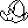 $9E9D, 24 by 24 | arms out, from behind | UPDATE_TOP |
| 30 | 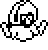 $9E05, 24 by 25 | arms out, from the front | UPDATE_TOP |
| 32 | 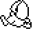 $98BF, 24 by 24 | with walking frame 0, from behind | TOP_FOLLOWS, 21 bytes into UPDATE_TOP |
| 33 | 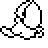 $9703, 24 by 24 | with walking frame 1, from behind | |
| 34 | 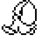 $99E3, 24 by 24 | with walking frame 2, from behind | |
| 35 | 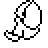 $9951, 24 by 24 | with walking frame 3, from behind | |
| 36 | $99E3, 24 by 24 | with walking frame 4, from behind | |
| 37 | $9703, 24 by 24 | with walking frame 5, from behind | |
| 38 | 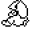 $982D, 24 by 24 | a pose, from behind | |
| 39 | 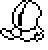 $9C3D, 24 by 25 | a pose, from behind | |
| 40 | 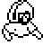 $9B0D, 24 by 25 | with walking frame 0, from the front | |
| 41 | 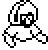 $9BA5, 24 by 25 | with walking frame 1, from the front | |
| 42 | 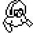 $9795, 24 by 25 | with walking frame 2, from the front | |
| 43 | 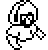 $9A75, 24 by 25 | with walking frame 3, from the front | |
| 44 | $9795, 24 by 25 | with walking frame 4, from the front | |
| 45 | $9BA5, 24 by 25 | with walking frame 5, from the front | |
| 46 | 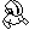 $9CD5, 24 by 25 | a pose, from the front | |
| 47 | 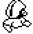 $9D6D, 24 by 25 | a pose, from the front |
Put in random cells at every new game (PLACE_OBJECTS), graphic 7 in record 0 down to 4 in record 3; taken up (OBJECT_LYING), they are carried as things 1-4 and thrown as 8-11 (KNIGHT_THROWS, OBJECT_FLIGHT), and each kills only the villain in the record 64 bytes on (OBJECT_STRIKE): the hammer the skeleton, the hourglass the hooded figure with the scythe, the cross the hooded figure, the book the ghost. A throw that meets a wall leaves it lying again, 4-7.
Mirrored: never by their own code: a thrown object is a copy of the legs' record, so it keeps his mirroring, and keeps it when it falls (KNIGHT_THROWS, OBJECT_FLIGHT).
| Graphic | Sprite | What it is | Update routine |
|---|---|---|---|
| 4 | $7FA5, 24 by 19 | the book, lying | OBJECT_LYING |
| 5 | 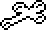 $7F49, 24 by 15 | the cross, lying | |
| 6 | $8075, 24 by 25 | the hourglass, lying | |
| 7 | $8019, 24 by 15 | the hammer, lying | |
| 8 | $7FA5, 24 by 19 | the book, thrown | OBJECT_FLIGHT |
| 9 | $7F49, 24 by 15 | the cross, thrown | |
| 10 | $8075, 24 by 25 | the hourglass, thrown | |
| 11 | $8019, 24 by 15 | the hammer, thrown |
A find (48-63) turns up in a building every sixteen turns (SPAWN_FIND), one of four kinds by the cell's type, four frames each; taken up it is an antibody, carried as thing 5-8 and thrown as 80-95 (KNIGHT_THROWS, ANTIBODY_FLIGHT), the same sprites. When a villain dies its four sparkles (140-143, VILLAIN_SPARKLES, SPARKLE_FLY) are the first frames of the four kinds.
Mirrored: finds and sparkles never; an antibody is a copy of the legs' record, so it keeps his mirroring (KNIGHT_THROWS).
| Graphic | Sprite | What it is | Update routine |
|---|---|---|---|
| 48 | $8359, 16 by 13 | find kind 0 (a spiral), frame 0 | FIND_WANDER |
| 49 | $838F, 16 by 13 | find kind 0 (a spiral), frame 1 | |
| 50 | $83C5, 16 by 13 | find kind 0 (a spiral), frame 2 | |
| 51 | $83FB, 16 by 13 | find kind 0 (a spiral), frame 3 | |
| 52 | 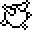 $8431, 16 by 16 | find kind 1 (a spiked ball), frame 0 | |
| 53 | $8473, 16 by 16 | find kind 1 (a spiked ball), frame 1 | |
| 54 | 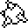 $84B5, 16 by 16 | find kind 1 (a spiked ball), frame 2 | |
| 55 | $8473, 16 by 16 | find kind 1 (a spiked ball), frame 3 | |
| 56 | $84F7, 16 by 16 | find kind 2 (crossed sticks), frame 0 | |
| 57 | 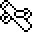 $8539, 16 by 16 | find kind 2 (crossed sticks), frame 1 | |
| 58 | 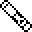 $857B, 16 by 16 | find kind 2 (crossed sticks), frame 2 | |
| 59 | 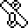 $85BD, 16 by 16 | find kind 2 (crossed sticks), frame 3 | |
| 60 | $85FF, 16 by 16 | find kind 3 (a disc), frame 0 | |
| 61 | $8641, 16 by 16 | find kind 3 (a disc), frame 1 | |
| 62 | $8683, 16 by 16 | find kind 3 (a disc), frame 2 | |
| 63 | $86C5, 16 by 16 | find kind 3 (a disc), frame 3 | |
| 80 | $8359, 16 by 13 | antibody kind 0 (a spiral), frame 0 | ANTIBODY_FLIGHT |
| 81 | $838F, 16 by 13 | antibody kind 0 (a spiral), frame 1 | |
| 82 | $83C5, 16 by 13 | antibody kind 0 (a spiral), frame 2 | |
| 83 | $83FB, 16 by 13 | antibody kind 0 (a spiral), frame 3 | |
| 84 | $8431, 16 by 16 | antibody kind 1 (a spiked ball), frame 0 | |
| 85 | $8473, 16 by 16 | antibody kind 1 (a spiked ball), frame 1 | |
| 86 | $84B5, 16 by 16 | antibody kind 1 (a spiked ball), frame 2 | |
| 87 | $8473, 16 by 16 | antibody kind 1 (a spiked ball), frame 3 | |
| 88 | $84F7, 16 by 16 | antibody kind 2 (crossed sticks), frame 0 | |
| 89 | $8539, 16 by 16 | antibody kind 2 (crossed sticks), frame 1 | |
| 90 | $857B, 16 by 16 | antibody kind 2 (crossed sticks), frame 2 | |
| 91 | $85BD, 16 by 16 | antibody kind 2 (crossed sticks), frame 3 | |
| 92 | $85FF, 16 by 16 | antibody kind 3 (a disc), frame 0 | |
| 93 | $8641, 16 by 16 | antibody kind 3 (a disc), frame 1 | |
| 94 | $8683, 16 by 16 | antibody kind 3 (a disc), frame 2 | |
| 95 | $86C5, 16 by 16 | antibody kind 3 (a disc), frame 3 | |
| 140 | $8359, 16 by 13 | a sparkle (a spiral) | SPARKLE_FLY |
| 141 | $8431, 16 by 16 | a sparkle (a spiked ball) | |
| 142 | $84F7, 16 by 16 | a sparkle (crossed sticks) | |
| 143 | $85FF, 16 by 16 | a sparkle (a disc) |
Put in random cells at every new game (PLACE_VILLAINS), 108 in record 0 down to 96 in record 3; each walks at random (VILLAIN_WANDER) and kills the knight at a touch. Four graphics each: bit 1 is which of two pictures by its facing and the view, bit 0 the walking frame, toggled every turn (FACING_PICTURE). The ghost has one picture from either side but two frames; the two hooded figures have two pictures and one frame; the skeleton has all four.
Mirrored: facing along U (FACING_PICTURE).
| Graphic | Sprite | What it is | Update routine |
|---|---|---|---|
| 96 | $7D41, 24 by 43 | the ghost: picture 0, frame 0 | VILLAIN_WANDER |
| 97 | $7E45, 24 by 43 | the ghost: picture 0, frame 1 | |
| 98 | $7D41, 24 by 43 | the ghost: picture 1, frame 0 | |
| 99 | $7E45, 24 by 43 | the ghost: picture 1, frame 1 | |
| 100 | 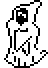 $9567, 24 by 34 | the hooded figure: picture 0, frame 0 | |
| 101 | the hooded figure: picture 0, frame 1 | ||
| 102 | $9635, 24 by 34 | the hooded figure: picture 1, frame 0 | |
| 103 | the hooded figure: picture 1, frame 1 | ||
| 104 | 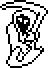 $8995, 24 by 34 | the hooded figure with the scythe: picture 0, frame 0 | |
| 105 | the hooded figure with the scythe: picture 0, frame 1 | ||
| 106 | $7C79, 24 by 33 | the hooded figure with the scythe: picture 1, frame 0 | |
| 107 | the hooded figure with the scythe: picture 1, frame 1 | ||
| 108 | 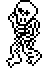 $810D, 24 by 34 | the skeleton: picture 0, frame 0 | |
| 109 | 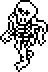 $8707, 24 by 36 | the skeleton: picture 0, frame 1 | |
| 110 | 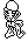 $87E1, 24 by 36 | the skeleton: picture 1, frame 0 | |
| 111 | 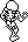 $88BB, 24 by 36 | the skeleton: picture 1, frame 1 |
Four kinds, one for each villain, of four graphics each, chosen as they appear by the villain nearest (APPEARING_UPDATE); they walk, turn, and some turn towards the knight (MONSTER112_UPDATE). Bit 1 of the graphic is the view, bit 0 the walking frame, as for the villains (FACING_PICTURE). What an antibody does to one depends on its kind and the antibody's (MONSTER_HIT_TABLE).
Mirrored: facing along U (FACING_PICTURE).
| Graphic | Sprite | What it is | Update routine |
|---|---|---|---|
| 112 | $93EF, 24 by 31 | monster kind 0 (the horned monster with its arms up): picture 0, frame 0 | MONSTER112_UPDATE |
| 113 | 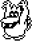 $94AB, 24 by 31 | monster kind 0 (the horned monster with its arms up): picture 0, frame 1 | |
| 114 | 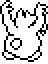 $81DB, 24 by 32 | monster kind 0 (the horned monster with its arms up): picture 1, frame 0 | |
| 115 | 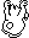 $829D, 24 by 31 | monster kind 0 (the horned monster with its arms up): picture 1, frame 1 | |
| 116 | 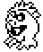 $933F, 24 by 29 | monster kind 1 (the spiky round monster): picture 0, frame 0 | |
| 117 | 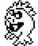 $928F, 24 by 29 | monster kind 1 (the spiky round monster): picture 0, frame 1 | |
| 118 | 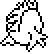 $7691, 24 by 27 | monster kind 1 (the spiky round monster): picture 1, frame 0 | |
| 119 | 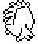 $7735, 24 by 28 | monster kind 1 (the spiky round monster): picture 1, frame 1 | |
| 120 | 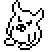 $91F1, 24 by 26 | monster kind 2 (the horned head): picture 0, frame 0 | |
| 121 | 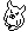 $9153, 24 by 26 | monster kind 2 (the horned head): picture 0, frame 1 | |
| 122 | $77DF, 24 by 26 | monster kind 2 (the horned head): picture 1, frame 0 | |
| 123 | 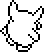 $787D, 24 by 26 | monster kind 2 (the horned head): picture 1, frame 1 | |
| 124 | $8FFF, 24 by 28 | monster kind 3 (the crested monster): picture 0, frame 0 | |
| 125 | 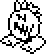 $90A9, 24 by 28 | monster kind 3 (the crested monster): picture 0, frame 1 | |
| 126 | $791B, 24 by 28 | monster kind 3 (the crested monster): picture 1, frame 0 | |
| 127 | 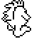 $79C5, 24 by 28 | monster kind 3 (the crested monster): picture 1, frame 1 |
Four kinds of four frames each, stepped round by NEXT_FRAME_MOD4; they wander at random and any antibody destroys them (WANDERING_MONSTER). A monster of 112-127 struck the wrong way can turn into one (HIT_DEMOTES).
Mirrored: while the town is turned round (WANDERING_MONSTER).
| Graphic | Sprite | What it is | Update routine |
|---|---|---|---|
| 64 | $8BCB, 24 by 17 | monster kind 0 (a blob), frame 0 | WANDERING_MONSTER |
| 65 | $8C33, 24 by 17 | monster kind 0 (a blob), frame 1 | |
| 66 | 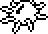 $8C9B, 24 by 17 | monster kind 0 (a blob), frame 2 | |
| 67 | $8C33, 24 by 17 | monster kind 0 (a blob), frame 3 | |
| 68 | 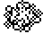 $8E91, 24 by 19 | monster kind 1 (a swarm), frame 0 | |
| 69 | 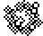 $8F05, 24 by 20 | monster kind 1 (a swarm), frame 1 | |
| 70 | 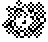 $8F7F, 24 by 21 | monster kind 1 (a swarm), frame 2 | |
| 71 | $8F05, 24 by 20 | monster kind 1 (a swarm), frame 3 | |
| 72 | $8A63, 24 by 20 | monster kind 2 (a dome), frame 0 | |
| 73 | $8ADD, 24 by 20 | monster kind 2 (a dome), frame 1 | |
| 74 | $8B57, 24 by 19 | monster kind 2 (a dome), frame 2 | |
| 75 | $8ADD, 24 by 20 | monster kind 2 (a dome), frame 3 | |
| 76 | $8E07, 32 by 17 | monster kind 3 (a slug), frame 0 | |
| 77 | $8D03, 32 by 17 | monster kind 3 (a slug), frame 1 | |
| 78 | $8D8D, 32 by 15 | monster kind 3 (a slug), frame 2 | |
| 79 | $8D03, 32 by 17 | monster kind 3 (a slug), frame 3 |
Put in the knight's cell every 256 turns (SPAWN_CREATURE); it makes for him two units a turn and bursts at a wall (CREATURE_UPDATE). Four frames, three pictures: 139 is 137 again.
Mirrored: never by its own code; it is put in a monster record and keeps that record's flags (read from SPAWN_CREATURE, which does not write them).
| Graphic | Sprite | What it is | Update routine |
|---|---|---|---|
| 136 | 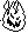 $7331, 24 by 28 | the creature, frame 0 | CREATURE_UPDATE |
| 137 | $73DB, 24 by 35 | the creature, frame 1 | |
| 138 | $74AF, 24 by 32 | the creature, frame 2 | |
| 139 | $73DB, 24 by 35 | the creature, frame 3 |
One set of four pictures, used three ways: 12-15 something vanishing, smallest first (VANISHING); 128-131 a monster appearing, the same pictures largest first (APPEARING_UPDATE); 132-135 a villain dying, flashing the play area (VILLAIN_DYING).
Mirrored: never by their own code; a record that turns into a puff keeps its flags.
| Graphic | Sprite | What it is | Update routine |
|---|---|---|---|
| 12 | $7B2F, 16 by 16 | vanishing, frame 0 | VANISHING |
| 13 | $7B71, 16 by 16 | vanishing, frame 1 | |
| 14 | $7BB3, 16 by 16 | vanishing, frame 2 | |
| 15 | $7BF5, 16 by 16 | vanishing, frame 3 | |
| 128 | $7BF5, 16 by 16 | a monster appearing, frame 0 | APPEARING_UPDATE |
| 129 | $7BB3, 16 by 16 | a monster appearing, frame 1 | |
| 130 | $7B71, 16 by 16 | a monster appearing, frame 2 | |
| 131 | $7B2F, 16 by 16 | a monster appearing, frame 3 | |
| 132 | a villain dying, frame 0 | VILLAIN_DYING | |
| 133 | $7B71, 16 by 16 | a villain dying, frame 1 | |
| 134 | $7BB3, 16 by 16 | a villain dying, frame 2 | |
| 135 | $7BF5, 16 by 16 | a villain dying, frame 3 |
Put near the knight whenever there is none (PLACE_BONUS): 2 on an even turn, 3 on an odd one. 2 makes him faster for a while (SPEED_BONUS), 3 gives him his three hits back (HITS_BONUS).
Mirrored: never.
| Graphic | Sprite | What it is | Update routine |
|---|---|---|---|
| 2 | $7297, 32 by 19 | a bonus: a faster walk | SPEED_BONUS |
| 3 | $7C37, 16 by 16 | a bonus: the hits back | HITS_BONUS |
Ten records from ENDING_RECORDS once the four villains are gone (GAME_OVER), drawn at a place on the screen with no projection (DRAW_SPRITE_AT, DRAW_SPRITE): the five pieces of the back of a pit (153-157, ENDING_PIT_FRONT), the four villains carried across and sunk into it one after another, two frames each (144-151, ENDING_VILLAIN), and the pit's front (152), drawn last so that they sink behind it.
Mirrored: never: the ending's records have no flags (GAME_OVER).
| Graphic | Sprite | What it is | Update routine |
|---|---|---|---|
| 144 | $7D41, 24 by 43 | the ghost in the ending, frame 0 | ENDING_VILLAIN |
| 145 | $7E45, 24 by 43 | the ghost in the ending, frame 1 | |
| 146 | $9567, 24 by 34 | the hooded figure in the ending, frame 0 | |
| 147 | the hooded figure in the ending, frame 1 | ||
| 148 | $8995, 24 by 34 | the hooded figure with the scythe in the ending, frame 0 | |
| 149 | the hooded figure with the scythe in the ending, frame 1 | ||
| 150 | $810D, 24 by 34 | the skeleton in the ending, frame 0 | |
| 151 | $8707, 24 by 36 | the skeleton in the ending, frame 1 | |
| 152 | 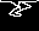 $7017, 32 by 26 | the pit's front | ENDING_PIT_FRONT |
| 153 | $70E9, 16 by 21 | the back of the pit, piece 0 | ENDING_PICTURE, 6 bytes into ENDING_PIT_FRONT |
| 154 | $713F, 16 by 24 | the back of the pit, piece 1 | |
| 155 | $71A1, 16 by 28 | the back of the pit, piece 2 | |
| 156 | $7213, 16 by 20 | the back of the pit, piece 3 | |
| 157 | $7265, 16 by 12 | the back of the pit, piece 4 |